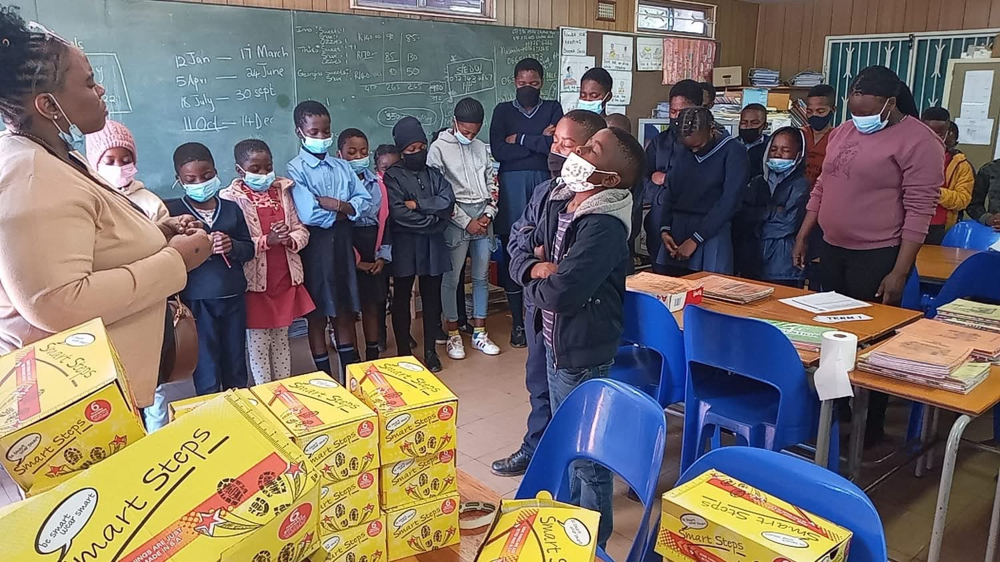

School Shoe Donations

Providing school shoes to learners at Kgabo Primary, Dikagodintle Primary, and Dr WF Nkomo High School.
Every drive we run is aimed at one goal: giving underprivileged learners the dignity and tools they need to attend school with confidence.

Providing school shoes to learners at Kgabo Primary, Dikagodintle Primary, and Dr WF Nkomo High School.

Supporting less privileged girls and women with sanitary towels and toiletries throughout the school calendar.
Monetary Donations: EFT transfers are accepted directly to the Foundation's bank account. Full banking details and our NPO registration number are provided on request via our Enquiries page.
Donate Items: We gladly accept school shoes, uniforms, sanitary towels, and toiletries. Drop-offs can be arranged at 509 Stasie Street, Pretoria North.